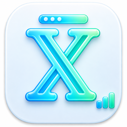
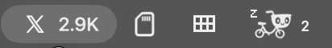
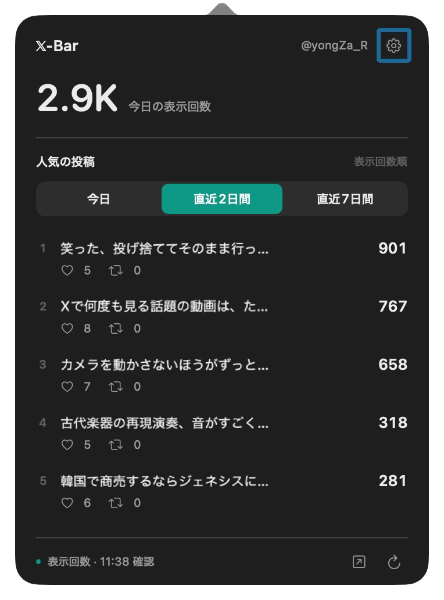

Mac
0.5.4
macOS 14以降
Apple Silicon / Intel
DMG · 署名・公証済み
インストール方法 ↗
𝕏-Bar無料・オープンソース · 한국어 / English / 日本語
反応が気になってXを開いたら、いつの間にか時間が。 X-Barでさっと確認して、いつもの作業に戻りましょう。
0.5.4
macOS 14以降
Apple Silicon / Intel
DMG · 署名・公証済み
インストール方法 ↗0.4.2 beta.1
Windows 11 x64
WebView2 Runtime
EXE · コード署名なし
インストール方法 ↗Xアナリティクスを利用できるアカウントが必要です。


Windows 11 x64 · デスクトップウィジェット · ベータ
今日のインプレッションと人気の投稿を、小さなウィジェットにまとめました。0.4.2ではエラーからの復帰と更新間隔を改善しています。
EXEを実行してインストールし、アプリ内でXにログインしてください。既存ユーザーは設定 → アプリの更新からインストールできます。
インストーラーにコード署名はありません。Windows SmartScreenの警告や、端末のポリシーによる実行制限が生じる場合があります。
今日のインプレッションを、MacのメニューバーやWindowsのデスクトップで確認。
人気の投稿、いいね、リポストをまとめて確認。クリックすると分析画面へ。
リポストが急増したら、メニューバーに小さな虹色のエフェクト。
上のボタンからダウンロードしたDMGを開きます。
X-Barをアプリケーションフォルダにドラッグして起動します。
Safari接続かアプリ内ログインを選択。アカウント名と今日のインプレッションを確認できれば完了です。
Safariの設定でX-Bar機能拡張を有効にし、x.comへのアクセスを許可して接続します。接続後はSafariを終了しても、X-Barが起動していれば更新を試みます。
X-Barは無料で、専用アカウントの登録も不要です。Xアナリティクスを利用できるXアカウントが必要です。Xのサービス利用条件は別途適用されます。
今日の合計は初期設定で10分ごとに確認します。設定で5・10・30分を選べます。投稿一覧は約10分ごとです。スリープ、ネット接続、Xの応答により遅れることがあります。
投稿日を基準にした期間です。投稿ごとのインプレッション・いいね・リポストは累計です。今日の合計には以前の投稿も含まれます。順位はアプリが確認した投稿に基づきます。
0.5.2以降は設定から更新を確認できます。インストールを選ぶとダウンロード・インストール・再起動まで進みます。1日1回の自動確認は設定でオフにできます。
このMacのアプリ専用領域に保存します。アカウント・投稿・指標を開発者のサーバーへ送りません。Safari接続は利用者の確認を経て行います。Xとの通信にはXのプライバシーポリシーが適用されます。
0.5.4以降は、初回起動時にログイン項目へ登録します。設定の「ログイン時に自動起動」でオン・オフを切り替えられます。macOSの許可が必要な場合は「ログイン項目の設定を開く」からX-Barを許可してください。オフにした設定は再起動後も保持されます。
X-Barを気に入っていただけたら、@yongZa_Rをフォロー。 アップデートや次のアプリをお届けします。